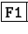
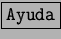

Next: Barra
Up: StarDesktop: El Entorno de
Previous: Ayuda general
Índice General
Su nombre en inglés es Help Agent. Se activa automáticamente en
gran número de situaciones, a no ser que se configure para que no lo
haga. Siempre presenta ayuda sensible al contexto, es decir,
relevante para la situación que se esté tratando. En la figura
5.24 se muestra su aspecto típico. Cuando no
se presenta espontáneamente, se puede hacer aparecer de varias formas:
- Eligiendo en el menú [Ayuda] la opción Ayudante.
- Pulsando la tecla .
- Pulsando el botón  de cualquier cuadro de diálogo.
Figura 5.24:
El Ayudante de StarOffice
|
|
Subsecciones
Proyecto Cursos - LuCAS - http://lucas.hispalinux.es/htmls/cursos.html
![\includegraphics[scale=0.5]{imagenes/eps/StarDesktopAyudante.eps}](img85.png)